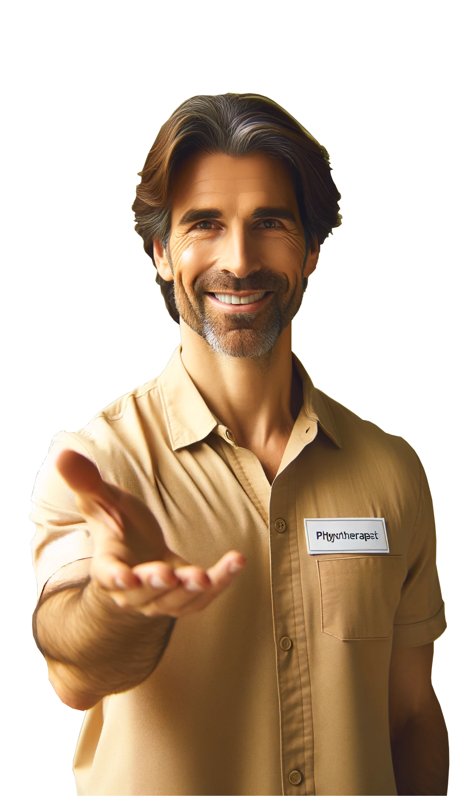

Nazywam się Marek Mostowiak i jestem dyplomowanym fizjoterapeutą z ponad 15-letnim doświadczeniem. Moją pasją jest pomaganie ludziom w powrocie do pełni zdrowia i sprawności po przebytych urazach, operacjach oraz w walce z chronicznym bólem. Specjalizuję się w terapii manualnej, rehabilitacji sportowej oraz kinezyterapii. W mojej praktyce skupiam się na indywidualnym podejściu do pacjenta, aby zapewnić najwyższą jakość usług. Dla mnie najważniejsze jest, aby każdy pacjent czuł się wysłuchany i odpowiednio zaopiekowany, dlatego stale poszerzam swoją wiedzę i umiejętności, uczestnicząc w kursach i szkoleniach. Zapraszam do zapoznania się z moją ofertą kursów oraz do skorzystania z konsultacji, które mogą być pierwszym krokiem do Twojego lepszego samopoczucia.
Jak to się zaczęło...
Moja fascynacja fizjoterapią zaczęła się bardzo wcześnie, kiedy jako młody chłopiec grałem w piłkę nożną. Pamiętam, jak podczas jednej z gier, mój przyjaciel doznał kontuzji. Instynktownie podszedłem, aby mu pomóc, coś we mnie wiedziało, jak złagodzić jego ból i unieruchomić nogę przed przyjazdem lekarza. To doświadczenie zapaliło we mnie iskrę - chciałem więcej wiedzieć, więcej robić, aby pomagać ludziom w ich trudnościach. Każda książka o ludzkim ciele, którą pochłaniałem, każde szkolenie pierwszej pomocy, w którym brałem udział, umacniało moje przekonanie, że moja przyszłość leży w fizjoterapii. Pragnąłem mieć umiejętności, które pozwolą mi nie tylko rozumieć, ale i leczyć, dając ludziom szansę na pełniejsze, zdrowsze życie. To była nie tylko moja pasja, ale i powołanie, które do dziś kształtuje moją praktykę terapeutyczną.
A jak jest dzisiaj...

Jako doświadczony fizjoterapeuta, każdego dnia doświadczam ogromnej satysfakcji z pomagania innym. Moja praca jest dla mnie pasją i źródłem nieustającej inspiracji. Specjalizuję się w terapii manualnej i rehabilitacji sportowej, co pozwala mi na indywidualne dopasowanie metod leczenia do potrzeb każdego pacjenta. Nie ma dla mnie większej radości niż widok pacjentów odzyskujących sprawność i uśmiech na twarzy. Ciągle doskonalę swoje umiejętności i wiedzę, uczestnicząc w kursach i szkoleniach, aby zawsze oferować najwyższą jakość usług. Moim celem jest stworzenie bezpiecznego i wspierającego środowiska, gdzie każdy pacjent może pracować nad swoim zdrowiem, aby powrócić do codziennych aktywności i cieszyć się lepszą jakością życia.
Więcej o mnie na moich socialach